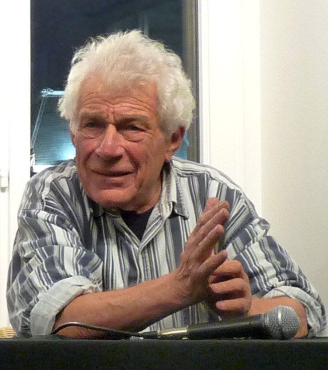

A Note on the Word “Adivasi”
Adivasi joins two words: ādi, “beginning” or “of earliest times,” and vāsī, “inhabitant.” Its sense is “original inhabitants.” It is a modern word. The historian David Hardiman traces it to the Chotanagpur region of present-day Jharkhand in the 1930s, where it named the Adivasi Mahasabha: formed in Ranchi in 1938 as the Adivasi Sabha, and renamed in 1939 under Jaipal Singh Munda. The social worker A. V. Thakkar carried it into wider use in the 1940s. In Bengali, and in the record of India’s Constituent Assembly, it is spelled Adibasi.
The word was chosen against older names. Colonial ethnography and the census called the same communities “aborigines,” “forest tribes,” and “animists”; later administration spoke of “primitive,” “backward,” and even “criminal” tribes. In the Constituent Assembly on 19 December 1946, Jaipal Singh Munda set those labels aside and spoke for “more than 30 millions of the Adibasis.” When the Assembly came to name the category in law, B. R. Ambedkar held that “Adibasi” had no fixed legal meaning. The Constitution instead speaks of Scheduled Tribes (Articles 342 and 366(25)), in Hindi anusūcit janjāti, communities listed by presidential order. It does not use the word Adivasi at all. Jaipal Singh asked that the Hindi term not be banjati, “forest tribes”: “The word Adibasi has grace.”
The names still carry politics. Hindu nationalist organizations prefer vanvasi, “forest dweller,” a word that sets aside any claim to prior habitation, and many Adivasi people reject it. Earlier coinages by Gandhian social workers, such as girijan (“hill people”), never took hold among the people they described.
Adivasi and Indigenous overlap, but they are not the same. Internationally, “Indigenous peoples” is the name under which communities claim rights, as in the UN Declaration on the Rights of Indigenous Peoples (2007). India voted for the Declaration, but its government takes the position that all citizens of India are indigenous, and it has not ratified ILO Convention 169, though it remains party to the earlier Convention 107. Scholars disagree as well. André Béteille argues that the idea travels poorly to India, where it is rarely possible to show who settled first; Virginius Xaxa that the claim rests less on literal first residence than on the prior claims of dispossessed peoples to land and resources; Sumit Guha that ideas of pristine indigenous ethnicity grew out of nineteenth-century colonial anthropology.
The word has regional limits too. Many communities in Northeast India call themselves tribal or indigenous and associate “Adivasi” with central India. In Assam, “Adivasi” names the descendants of Oraon, Munda, Kharia, Santal, and other workers brought from central India to the tea gardens in the nineteenth century, who are classified there as Other Backward Classes rather than Scheduled Tribes.
In this archive I use Adivasi, as many of the people and collectives it gathers do, and Indigenous where the conversation is international. Tribe and tribal appear where they are the language of the state or of a source; aboriginal only when quoting the colonial record. The 2011 Census counted 104 million people as Scheduled Tribes, 8.6 per cent of India’s population; in Jharkhand, 26 per cent.
Sources for this note
- Hardiman, David. 1987. The Coming of the Devi: Adivasi Assertion in Western India. Delhi: Oxford University Press, 13–15. PDF
- Tewari, Saagar. 2022. “Framing the Fifth Schedule: Tribal Agency and the Making of the Indian Constitution (1937–1950).” Modern Asian Studies 56 (5): 1556–94. DOI
- Constituent Assembly Debates, 19 December 1946; 2 December 1948; 5 September 1949. 1946 · 1948 · 1949
- Government of India. The Constitution of India, Articles 342 and 366(25). PDF
- Government of India, Ministry of Tribal Affairs. 2014. Report of the High Level Committee on Socio-Economic, Health and Educational Status of Tribal Communities of India (Xaxa Committee). PDF
- Baviskar, Amita. 2007. “Indian Indigeneities: Adivasi Engagements with Hindu Nationalism in India.” In Indigenous Experience Today, edited by Marisol de la Cadena and Orin Starn, 275–303. Oxford: Berg.
- United Nations. 2007. “General Assembly Adopts Declaration on Rights of Indigenous Peoples.” Press release GA/10612. Link
- International Labour Organization. “India” (country note on indigenous and tribal peoples). PDF
- Béteille, André. 1998. “The Idea of Indigenous People.” Current Anthropology 39 (2): 187–92. DOI
- Xaxa, Virginius. 1999. “Tribes as Indigenous People of India.” Economic and Political Weekly 34 (51): 3589–95. JSTOR
- Guha, Sumit. 1999. Environment and Ethnicity in India, 1200–1991. Cambridge: Cambridge University Press. DOI
- Chophy, G. Kanato. 2025. “Contested Tribes: The Subjectivity of Tribe and State in India.” Public Humanities 1: e143. DOI
- Lakra, Joseph M. 2024. “‘Tea Tribe’ or ‘Scheduled Tribe’? Vexed Adivasi Identity in Assam.” Sociological Bulletin 73 (4): 398–408. DOI
- Government of India, Ministry of Tribal Affairs. 2013. Statistical Profile of Scheduled Tribes in India 2013, tables 1.6 and 1.8. PDF
After John Berger

The archive takes its name from John Berger’s Ways of Seeing, first a four-part BBC television series in January 1972 and, later that year, a book made with Sven Blomberg, Chris Fox, Michael Dibb, and Richard Hollis. Berger (1926–2017), a novelist, painter, and critic, opened both with the same proposition: “Seeing comes before words.” What we see is shaped by what we know and believe, and “the relation between what we see and what we know is never settled.” From there he read European oil painting as an art of property, showed how the nude was painted for a spectator assumed to be male, and traced the same grammar into the advertising of his own day. Drawing on Walter Benjamin, he argued that reproduction had freed images from the places that once held them, so that the question became who uses them, and for what.
Berger did not stay in the gallery. In the 1970s he moved to a village in the Haute-Savoie and spent the following decades writing about peasant life, most fully in the trilogy Into Their Labours, which begins with Pig Earth (1979). With the photographer Jean Mohr he made A Seventh Man (1975), on migrant workers in Europe, and Another Way of Telling (1982), on photographs and the people in them. That later Berger, attentive to lives being remade by forces far from them, is as much this archive’s ancestor as the critic of oil painting.
I carry the title into a different register. Berger asked how a way of seeing is built into the images a dominant culture makes, and how a viewer might learn to see through it. Most of what is gathered here was made from the other side of the lens: by Adivasi filmmakers, collectives, and communities who were looked at for a century — by colonial ethnography, the census, the state’s documentary, and the development film — and who now make, circulate, and keep their own images. The questions move with them. Who holds the camera? Who decides what a film may show, and to whom? Who keeps the record, and who may withdraw it? From Berger the archive takes the conviction that seeing is never innocent, and it asks the same of itself: who describes an image, on whose terms, and with whose permission.
The Project
Ways of Seeing brings together projects and conversations around community media and Indigenous media that stand in opposition to conventional media forms. It gathers work that reflects a community’s own perspective rather than a filmmaker’s view from outside — media made through self-reflexive, participatory processes, where the people being represented take part in deciding how they are represented.
The project works in two strands. The Archive — the catalog, the Screening Room, the Readings, and the First Principles that govern them — gathers the media itself. Counter-Mapping turns the same questions on another instrument of seeing: the survey sheet, the census table, and the satellite image through which the state describes Adivasi land, read against what communities record for themselves.
Ways of Seeing is a digital humanities project. The catalog, its metadata, and its First Principles are not only a way of holding this material; they are an argument about how Adivasi media should be described, kept, and circulated, and by whom.
The project has three phases, and they should not be collapsed. In 2021–22 I built a skeleton site as coursework in Critical Media Literacy with Prof. Jeff Share at UCLA: structure without holdings, and no governance of any kind. In 2024 I began gathering material in collaboration with filmmakers and interlocutors in Ranchi, which is when questions of consent, attribution, and access became real rather than hypothetical. In 2026 I drafted the First Principles to answer the questions that work had already raised in practice.
What you see here is the project’s public index: a catalog of films, collectives, platforms, documents, and scholarship that their makers have already published, with links to where they host them. The archive points rather than possesses. Its holdings — field material gathered since 2024 — are governed separately, and are not published here until the people they belong to decide how, or whether, they should circulate.
Many people shaped it along the way; they are named in the acknowledgements.
With AKHRA
This archive would not exist without the AKHRA collective in Ranchi. Biju Toppo and Meghnath, who founded AKHRA in 1996, and the filmmaker and editor Rupesh Kr Sahu gave me access to the collective’s films, papers, and workspace, and opened for me a world of texts and materials on the Adivasi question in India that I would not otherwise have found. Much of the reading and many of the films gathered here reached me through them, and I am grateful for their generosity, their patience, and their trust.
That work is also the ground of my doctoral dissertation at UCLA, Palimpsests of the Ocular: The Negotiated Sovereignty of Indigenous Media and Archives among Adivasis of Jharkhand, India, which examines how Adivasi media collectives create visual counter-archives through participatory filmmaking, with AKHRA at its centre (see Research). Ten of the collective’s films, from Development Flows from the Barrel of the Gun (2003) to Rupesh Kr Sahu’s Rat Trap (2022), are now held by UCLA Library, where students and researchers can watch them. The questions that raises — who describes a collective’s work, and on whose terms — are part of what the First Principles try to answer.
Advisory Board
An archive of Indigenous media should answer to the people it describes. The advisory board is how Ways of Seeing is held to account: its members advise on what the archive gathers and how it describes it, think with me about what it could become, and help it reach the audiences it is for, beginning with Adivasi communities themselves.
Sneha Mundari
Filmmaker, visual anthropologist, and design educator
A filmmaker from the Munda Adivasi community, trained in Film and Video Communication at NID Ahmedabad and in Visual Anthropology at Goldsmiths, University of London. Her documentary Aabua Paika Kabu Bageya (We Won’t Let Go of Our Paika, 2017), on the Munda martial dance, has been screened at more than twenty festivals. She has taught at NID Ahmedabad, and her work concerns Indigenous peoples, craft and culture, the politics of the gaze, and the ethics of representation in audiovisual media.
Akriti Karishma Lakra
Independent researcher · Tribal Cinema of India
An Adivasi researcher working independently, and a member of Tribal Cinema of India, a national body of Adivasi filmmakers and film workers.
Biju Toppo
Documentary filmmaker · AKHRA, Ranchi
A National Award–winning documentary filmmaker from the Kurukh (Oraon) community, who co-founded AKHRA with Meghnath and has made films on Adivasi land, rights, and life for three decades, among them Development Flows from the Barrel of the Gun and The Hunt. He is president of Tribal Cinema of India and teaches video production at St. Xavier’s College, Ranchi.
Explore Ways of Seeing
The home page is open to everyone. The other pages ask you to sign up first; it is free.